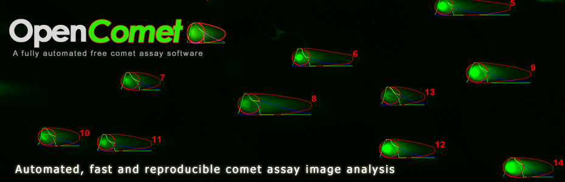
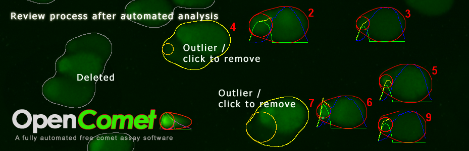
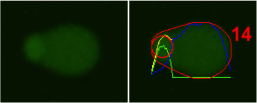
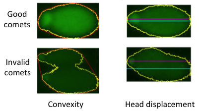
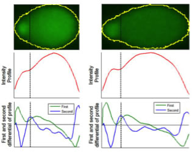

-

-

-

This release fixes a critical issue related to comet head finding which was introduced by a change in ImageJ.
BM Gyori, G Venkatachalam, PS Thiagarajan, D Hsu and MV Clement. "OpenComet: An automated tool for comet assay image analysis",
Redox Biology, 2:457-465, 2014.
OpenComet is a plugin for the image processing program ImageJ. The latest version of OpenComet (v1.3) can be obtained from the Downloads page. Follow the instructions to install and launch OpenComet. OpenComet can analyze a batch of comet assay images, identify the comets and measure their parameters. Refer to the usage instructions and a video tutorial to learn using the tool.
- Automated analysis: faster and less prone to human bias
- Robust methods for finding comets and comet head
- Measures DNA% in tail, Tail moment, Olive moment and other comet parameters
- Manual review (optional) of analysis results
- Live measurement of comets using Micro-Manager
- Validated on both alkaline and neutral comet assay images

Part of the challenge in identifying valid comets is throwing away non-comet objects and overlapping (or clumped) comets. Our approach involves extracting shape parameters such as convexity ratio and a measure of symmetry. These shape parameters can be used to separate comets from non-comets.

We have introduced a novel comet head finding method based on intensity profile analysis, which performs robustly for damaged cells.
